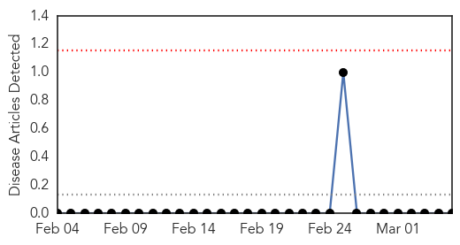
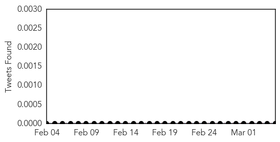
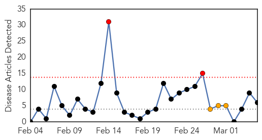
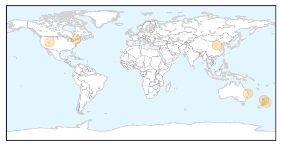
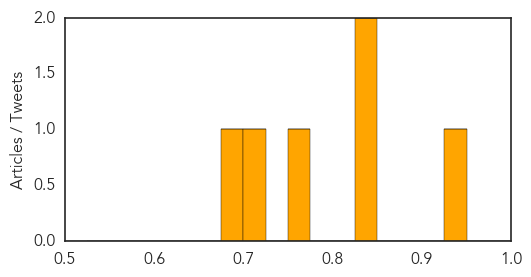

Bubonic Plague
30-Day Web Trend
0 alerts, 0 warnings

30-Day Twitter Trend
0 alerts, 0 warnings

Article Locations

Article Confidences

Top Articles:
-
No articles found for Mar 05, 2014
Top Tweets:
-
No tweets found for Mar 05, 2014
Measles
30-Day Web Trend
2 alerts, 3 warnings

30-Day Twitter Trend
0 alerts, 0 warnings

Article Locations
Article Confidences
Top Articles:
- 0.943
- WHO calls for more measles vaccination in Europe as large outbreaks persist
- 0.849
- Measles fears for passengers to NZ
- 0.827
- OUTBREAK: 53 people in 10 states stricken with measles
- 0.762
- Measles case confirmed in Ottawa
- 0.712
- New measles alert on Brisbane to Auckland flight
- 0.686
- Measles alert in Hawke's Bay
Top Tweets:
-
No tweets found for Mar 05, 2014